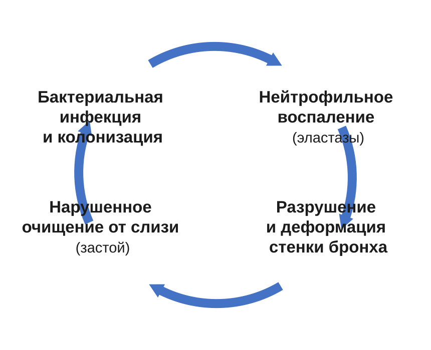
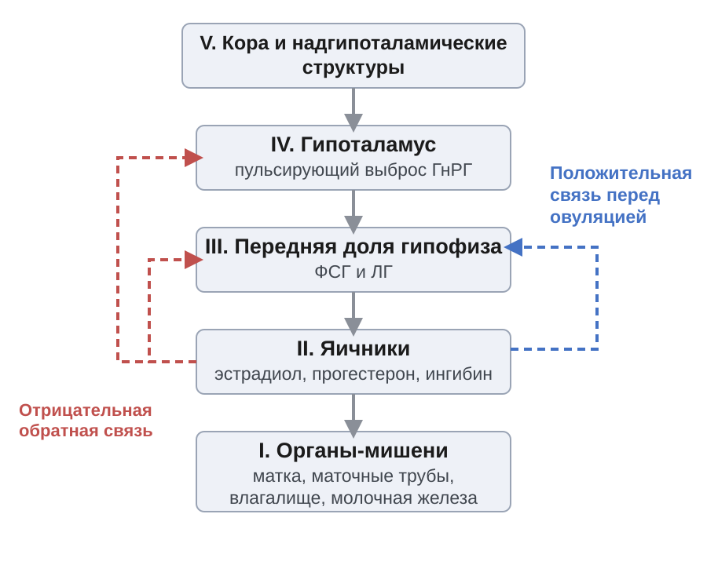
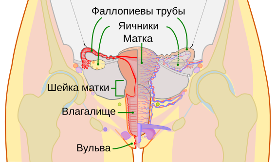
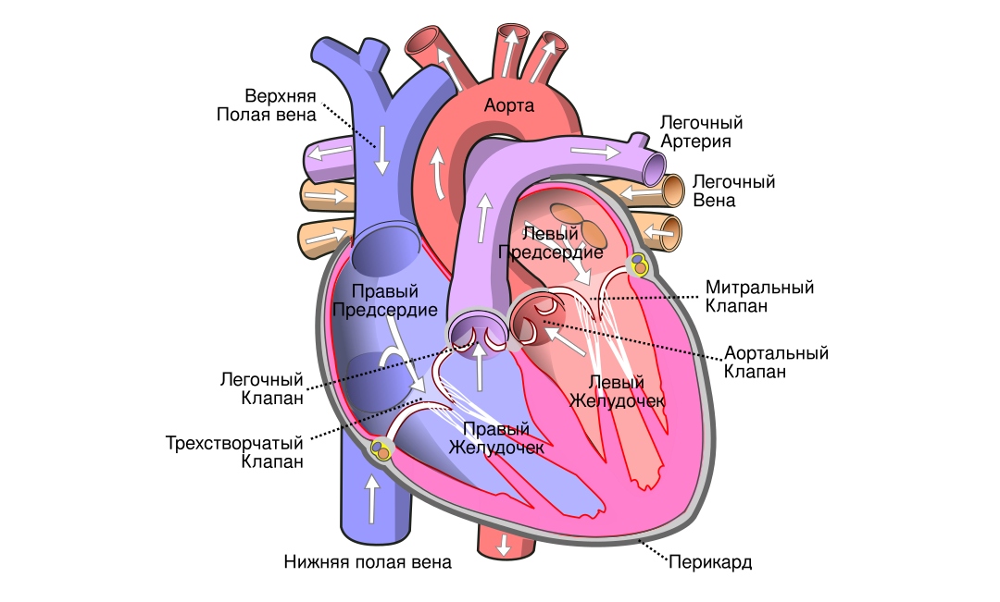
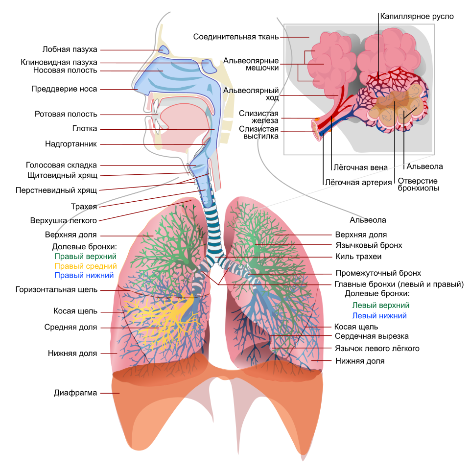
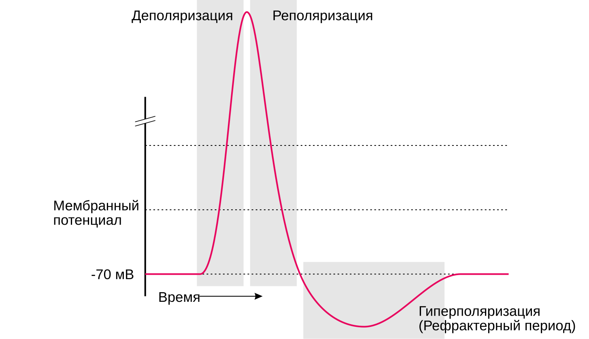
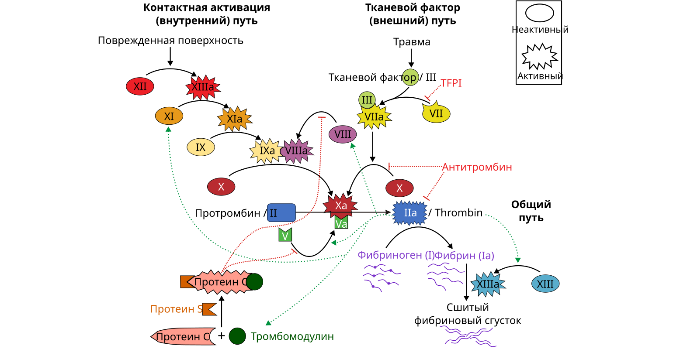
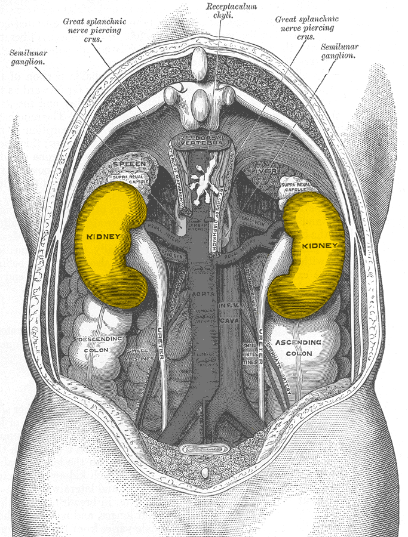

Абсцесс и гангрена лёгкого. Бронхоэктатическая болезнь
Чем абсцесс отличается от гангрены и от бронхоэктатической болезни, чем они кончаются, что видно на снимке и когда нужен хирург.

Чем абсцесс отличается от гангрены и от бронхоэктатической болезни, чем они кончаются, что видно на снимке и когда нужен хирург.

Пять уровней регуляции и обратные связи между ними, пульсирующий ГнРГ, циклы яичника и матки, становление функции в пубертате и её угасание.

Слои стенки матки, шейка и зона трансформации, связочный аппарат и положение матки, кровоснабжение, лимфоотток и иннервация.

Автоматизм и проведение, фазы цикла с давлениями, петля «давление — объём», преднагрузка и постнагрузка, венозный возврат.

Механика вдоха, сурфактант, мёртвое пространство, зоны Веста, кривая диссоциации, хеморецепторы, чтение газов крови.

Потенциал покоя, ворота каналов, фазы потенциала действия, миелин, нервно-мышечный синапс, точки приложения ядов и лекарств.

Эндотелий, адгезия и агрегация, клеточная модель свёртывания, фибринолиз, что ловят АЧТВ и МНО, триада Вирхова.

Зачем почка фильтрует всё и возвращает почти всё; барьер и силы фильтрации, противоточный механизм, гормональная регуляция, клиренс.
Все материалы · Глоссарий · Поиск
В темах появились схемы: строение стенки матки, зона трансформации шейки, кровоснабжение матки, патогенез бронхоэктазов и снимок абсцесса. Нажмите на любую — откроется во весь экран.
Госпитальная хирургия: абсцесс и гангрена лёгкого, бронхоэктатическая болезнь. Гинекология: анатомия женских половых органов. У обеих есть краткая версия.
Нажмите на любую схему в теме — она откроется во весь экран. Дальше листайте пальцем или стрелками: подпись меняется вместе с рисунком.
В настройках можно выбрать шрифт, которым читать. Каждый показан своим начертанием — видно, что выбираете.
Текст занимает всю ширину окна. Если строки кажутся длинными, в настройках есть узкая и средняя колонка.
Нажмите на название дисциплины — откроются её темы, тесты, экзаменационные вопросы и материалы.
Подчёркнутое слово в тексте объясняется всплывающей подсказкой. На компьютере можно выбрать, открывать её наведением или кликом.
Каждая тема здесь собрана из нескольких руководств сразу — чтобы не читать их подряд перед занятием или экзаменом. Внутри вся теория по теме, разбор терминов и вопросы для проверки себя.